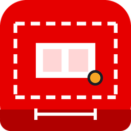

Layout Çizim Motoru
Yerleşim Planı · STEP → A3 pafta · TR / EN / DE
Uygulama aranıyor…
Nasıl çalışır
- "Uygulamayı başlat" uygulamayı arka planda çalıştırır ve bu sekmede açar. Tarayıcı izin isterse "Aç"a tıklayın (her zaman izin ver).
- "Ayrı pencerede aç" uygulamayı adres çubuksuz kendi penceresinde açar; masaüstündeki "Layout Çizim Motoru" simgesi de aynısını yapar.
- Düğmeler çalışmıyorsa bir kez LAYOUT klasöründeki Kurulum.bat dosyasına çift tıklayın (masaüstü simgesi ve başlatma bağlantısı kurulur; yönetici izni gerekmez).
PDF çıktısı
- Uygulamada üst çubuktaki "İndir": PDF ya da HTML, dil (TR / EN / DE) ve bölüm seçilir; seçilen diller arka arkaya tek dosya olur, proje klasörüne kaydedilir ve indirilir.
- Web sürümü (GitHub Pages) kurulum gerektirmez: aynı arayüz tarayıcıda ya da telefona yüklenmiş uygulama olarak çalışır; STEP işleme yalnız bu bilgisayarda yapılır.
LAYOUT/index.html · http://127.0.0.1:8765